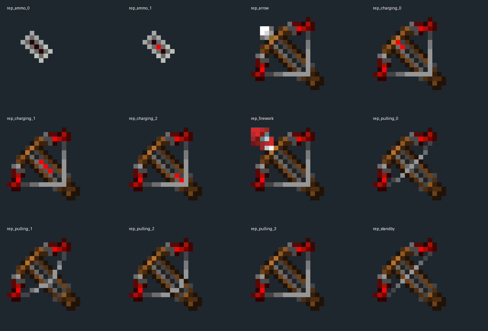
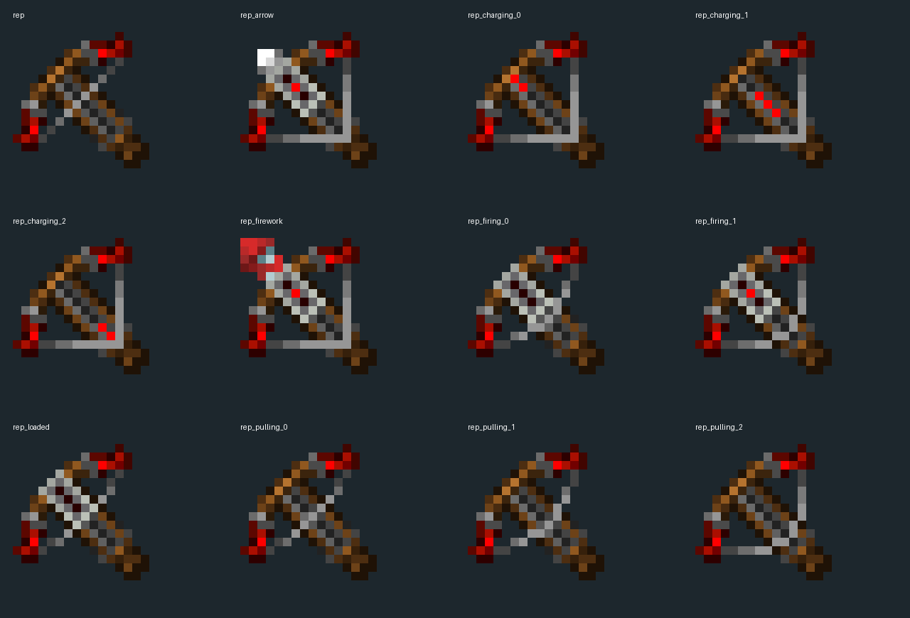

作者Modrinth源码链接落到公开仓库，master读取后固定为0f4e44d。实际属性为MC1.20.1、Forge47.4.9、mod1.0-1.20.1、Java17；没有把网页兼容范围当实际构建版本。
只读源码归档，未运行Gradle；不升级Dynasty。归档有固定commit与本地hash，未另取Git树独立核对blob。新固定源码研究1项，待全局语义/独立验收，已接受新增0。不是新生物、不是1000门槛完成，未改生产资源。
参考图版权归NarrowZone作者Lucas；仅研究。


作者Modrinth源码链接落到公开仓库，master读取后固定为0f4e44d。实际属性为MC1.20.1、Forge47.4.9、mod1.0-1.20.1、Java17；没有把网页兼容范围当实际构建版本。
只读源码归档，未运行Gradle；不升级Dynasty。归档有固定commit与本地hash，未另取Git树独立核对blob。真实注册narrowzone:repeating_crossbow构造RepeatingCrossbowItem，@Mod构造注册物品；客户端setup enqueue属性注册。配方结果同一ID。
模型文件名与配方文件名相同但来源目录不同；引用表中的repeating_crossbow.json为模型，配方完整阅读另记录路径。tm_magazine是ItemStack完整NBT列表；装填复制count1追加尾部，发射取index0后删除，因此是FIFO，混合附魔箭/烟花的顺序与物品NBT保留。
和Multicharge最后取出LIFO的机制不同；新独立性仍待全局语义复核，不能因名字不同直接验收。默认容量12，一次装填达时把副手优先、再背包items遍历的可用弹药填到上限；生存每颗扣1，创造不扣且无弹时补普通箭。
创造持副手特殊弹会反复复制到满；这不是依次轮换弹种，也不表示从所有装备槽找弹。单次使用按有弹/无弹进入FIRE/RELOAD，装填80-10*QuickCharge、击发10-2*QuickCharge，各最低5tick；getUseDuration为72000只是持续使用上限。
本地公式不是实际输入频率测量，也不把页面high fire rate当持续tick自动射击证明。服务器达击发时长先FIFO弹出一颗，Multishot复制1或3个ChargedProjectiles，调用原生performShooting，再清临时charged列表，设置STOP并stopUsingItem。
每次use最多走一次此发射出口；长按是否由原版客户端重新触发使用尚未闭合。原生实际生成/扣耐久/统计后续待同版本读取。服务器onUseTick是主体，非Player直接返回；UseStopHandler只处理LightCrossbow，对重复弩没有额外退出功能。releaseUsing不调用父类，只在STOP时清flag或清mode。
不能把这个玩家物品直接当成已有Mob射击AI，不能用另一个类的Stop订阅补它的状态链。getHandHolding先按mainhand引用或ItemStack.matches，再offhand；客户端usingThis也接受matches。两栈内容相同不等于引用同一栈。
可能身份含混的条件已记录，未实机证明错手或反复触发；不能声称已经有唯一栈UUID约束。服务端inventoryTick用magCount改charged；客户端按正在使用且MODE_FIRE累加tm_fire_anim，其他情形归零。模型fire属性采这份动画值，reload属性采实际已用tick比。
状态NBT与客户端局部视觉同处栈上；网络同步延迟/覆盖和重登恢复未运行。mode属性按是否正用及magCount返回0/1/2，type按下一发返回烟花1/箭2，loaded只在未使用且有弹时1。12个模型JSON的层叠贴图全部实际查看。
属性mode并不直接返回tm_mode。原生阈值倒序语义与网络过渡可能影响选帧；本批没有执行烘焙。贴图是16×16有组织的大形：暖木握持、冷灰弓臂、红色端饰分清。充能3帧让亮色沿机构移动；击发帧复用拉弦图加独立ammo层，不是12套独立模型。
只借鉴状态与显示对应；不复制原图，不把红色装饰称为所有Boss适用模板。pulling_3 PNG在所读JSON中未引用，不算运行帧。EntityJoin事件对所有AbstractArrow按owner的“最可能”当前武器追加远射/连锁NBT；它不是发射时显式传武器身份。连锁生成箭标志避免在Join被重置深度。
此为重复弩的相关消费者上下文，0额外家族；火箭不走AbstractArrow这个分支，实际事件顺序与命中结果未运行。连锁产生在ProjectileImpactEvent里，没等LivingHurt成功；取邻近活体并排除owner/当前/上个目标/盟友，另生成普通Arrow，保留有限origin/longshot标志。
不是原有药箭实体完整复制，也不证明伤害必成功；不把这个附魔另计重复弩参考。